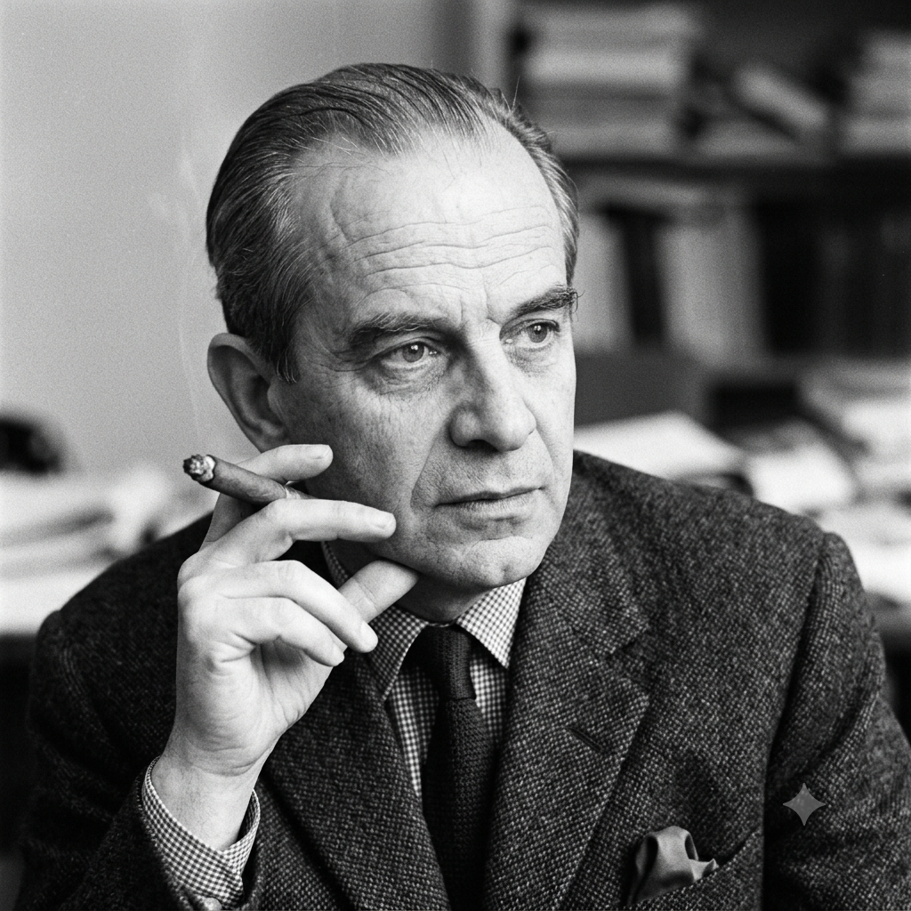

Principais Conceitos
Por Beatriz
O principal conceito de Jacques Lacan é a ideia de que o inconsciente é estruturado como uma linguagem.
Psicanalista francês que revolucionou a teoria freudiana, integrando a linguística e a filosofia

Por Beatriz
O principal conceito de Jacques Lacan é a ideia de que o inconsciente é estruturado como uma linguagem.